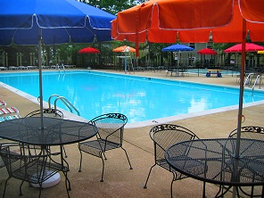

From May to September, home for many of us is a lounge chair by our pool. Some of us go to the pool for a few ZZZs in the sun. Others actually go to swim.
The pool hours before Fairfax County schools close are:
| Tuesday - Friday | 4:30 pm – 8:00 pm |
| Saturday and holidays | 11:00 am – 8:00 pm |
| Sunday | 12:00 pm - 8:00 pm |
After school lets out, the hours change to:
| Tuesday - Friday | 2:00 pm – 8:00 pm |
| Saturday and holidays | 11:00 am – 8:00 pm |
| Sunday | 12:00 pm - 8:00 pm |
Please remember that everyone needs a pool pass, from tots to grandparents. And everyone needs to apply, every year. We mail the application to you in April. A copy of the pool pass application is also available on this website.
Each year we publish the Pool Rules for you and your family to read. Please take the time to read the rules before opening day to ensure that the pool is enjoyed by all.
See you at the pool!